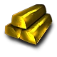
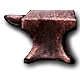

Estrategias Multijugador
Versión 1.2 — Publicado por sinful_666 · Todo lo que necesitas para dominar las partidas competitivas de Empire Earth
Versión 1.2 — Publicado por sinful_666 · Todo lo que necesitas para dominar las partidas competitivas de Empire Earth
Qué hace único a Empire Earth y cómo aprovecharlo en multijugador
La efectividad está determinada por tipos de ataque y armadura, no por números fijos. Un soldado con médico puede resistir cientos de enemigos si explotas el sistema roca-papel-tijera.
Elige bonificaciones de civilización punto por punto (límite 100). Mejora individualmente cada tipo de unidad en daño, alcance, velocidad, salud, armadura y área de efecto.
100 puntos para personalizar tu estilo de juego
Busca el equilibrio: bonificaciones de extracción (piedra +20%, oro +15%, hierro +15%) más reducción de coste y tiempo de construcción en las unidades que más uses.
Épocas tardías: prioriza tanques y aviación. Épocas tempranas: arqueros y caballería.

+15%
+15%Enfócate en una sola unidad: arqueros, caballería o tanques. Máxima reducción de coste y tiempo de construcción para esa unidad. Bonificaciones de recolección según el recurso que uses.
Arqueros: madera + oro. Caballería: comida + hierro. Tanques/aviones: hierro + oro.
Con 300 de límite te da 45 unidades extra. Esencial para la estrategia de fortalezas. Solo cuesta 9 puntos.
La piedra es el recurso defensivo más importante: torres, muros y maravillas. Además suele ser el más escaso en los mapas.
Se usa en casi todas las unidades, en todas las épocas, y en prácticamente todas las investigaciones.
Imprescindible en eras atómicas y posteriores. Todo lleva hierro: tanques, aviones, cibers.
Principios universales para cualquier partida
Ataca siempre con un ejército más pequeño de lo que dejas defendiendo (proporción 1:2). Cuando el enemigo se desgaste, manda la defensa al ataque y produce reemplazos.
Construye 2-3 bases, cada una con edificios de producción, defensas y recolección propia. Contra rivales avanzados no te darán tiempo a expandirte, así que sé rápido.
La plantilla para Boom y Rush
Puebla asentamientos a centros urbanos (5 ciudadanos mínimo). 6 ciudadanos en cada parche, 12-24 leñadores, 16 granjeros con graneros poblados (8 ciudadanos cada uno). Al menos 3 de cada edificio de producción.
El objetivo no es eliminar al enemigo, sino debilitarlo. Construye el barracón lo antes posible. Sigue la misma plantilla de base que en boom, pero adelanta la producción militar sin comprometer ciudadanos.
Cómo convertir tu base en una fortaleza inexpugnable
Una torre no sirve. 10 funcionan. 50 imponen. 100-500 crean una fortaleza real. Construye torres en capas alrededor de la base, añade templos entre ellas y hospitales cerca. En épocas avanzadas, completa con AA.
Capa exterior lejos de la base como alerta temprana. Capa interior cerca de la base con ejército esperando. Coloca artillería detrás de la segunda muralla. Cuando rompan la primera, tus tropas ya están listas.
Construye fortalezas, llénalas de unidades y mantén población libre con la bonificación +15%. Cuando ataquen, vacía la fortaleza más cercana. Con 40 fortalezas llenas, nadie se atreve a asaltarte.
En épocas avanzadas, coloca aeródromos defensivos con 3-9 bombarderos cada uno. Al detectar un ataque, asigna waypoints al área de combate. Respuesta inmediata sin mover tropas terrestres.
Todas las unidades del rush avanzan en una sola dirección y son difíciles de controlar en las etapas finales. Los rushers usan unidades baratas para hacer bulto, sin defensa contra artillería.
Crea obstáculos y embudos con muros en V que dirijan a las tropas enemigas hacia áreas confinadas. Coloca artillería alrededor y espera a que todas las unidades del rush entren. Destrúyelas de golpe.
Proporción 2:1 de acorazados sobre fragatas. Los acorazados bombardean costa, las fragatas protegen de galeras.
Añade cañoneros (3-4 por cada 5 casillas de flota) y portaaviones con complemento completo de cazas para cobertura aérea.
Mantén 5 Sea Kings o fragatas cerca de la flota. Los submarinos son invisibles para el resto de unidades.
Cómo llevar la guerra al territorio enemigo
3 grupos de unidades mixtas (~35 cada uno, uno con héroe) + 3 grupos de asedio. Ataca desde dos flancos primero; cuando el enemigo responda, entra con el grupo principal desde una tercera dirección.
Llena 10-20 fortalezas (400-800 unidades). Avanza con profetas: lanza terremotos contra edificios, luego entra con asedio y unidades. Vacía fortalezas para reemplazar bajas al instante.
3 grupos: tierra, helicópteros y aire. Bombarderos primero para AA y edificios. Luego tierra para eliminar AA restante. Helicópteros para limpiar unidades terrestres.
10 acorazados, 5-8 fragatas, 5 Sea Kings, 1 portaaviones, ~6 cruceros Dardo, 1-2 submarinos nucleares.
Acorazados eliminan torres costeras. Fragatas y Sea Kings protegen de submarinos. Cruceros derriban defensa aérea enemiga.
5 transportes con tanques Leopard (velocidad + blindaje) desembarcan en la brecha. Eliminan AA restante. Submarinos nucleares dan línea de visión y misiles teledirigidos.
3 aeródromos: 15 cazas, 5 cazas + 10 cazabombarderos, 12 bombarderos + 3 nucleares. Cazas primero, luego cazabombarderos, bombarderos al final contra recursos y fábricas.
30 partisanos atraviesan muros y bosques. Ataca ciudadanos y debilita edificios. No destruyas — debilita tantos edificios como puedas para sembrar el caos.
10 francotiradores en sigilo. Sepáralos al llegar a la base enemiga. Cada uno elimina ciudadanos desde lejos. Pueden durar mucho si los mueves con atención.
4-6 unidades de caballería mixta (espada + fuego) a los 8:30 minutos de partida. Las de espada atacan tropas defensoras; las de fuego eliminan ciudadanos. Prioridad: comida > oro > hierro > madera.
Qué mejorar según cada tipo de tropa
Alcance > Daño > Velocidad o Armadura. Con más alcance golpean antes y desde más lejos.
Salud > Daño > Velocidad. Si no usas caballería, la velocidad se vuelve prioritaria.
Alcance > Daño. Para hit-and-run: añade velocidad. Para combate directo: salud y armadura.
Velocidad > Daño > Salud. Llega más rápido al combate y persigue unidades en retirada.
Contra hit-and-run: velocidad + daño. Contra lucha directa: daño + alcance + armadura.
Área de efecto + Tiempo de vuelo + Salud. El daño ya es enorme de base.
Ataque + Velocidad + Salud. Tiempo de vuelo siempre. No querrás repostar en medio de un dogfight.
Alcance + Ataque. Para hit-and-run añade velocidad. Tienen combustible infinito, así que no necesitas tiempo de vuelo.
Cada una da una ventaja única a tu civilización
Revela una gran cantidad de mar alrededor de la estructura. Imprescindible en mapas con costa para detectar flotas enemigas.
Muestra la ubicación de todos los edificios del rival. Ideal para anticipar incursiones, ver cuándo abren puertas y planificar asedios.
Aumenta los PV de todas las torres y muros. Obligatoria en cualquier estrategia defensiva. Construye esta maravilla siempre.
Las unidades inactivas se curan solas. Con héroe estratega, la curación se acelera. Con héroe guerrero, tus tropas se curan mientras luchan con moral alta.
Los sacerdotes convierten grupos enteros de unidades enemigas. Letal si metes varios sacerdotes en tus fortalezas defensivas.
Lo que marca la diferencia entre un buen jugador y un experto
La bonificación de +15% de población no es para tener más tropas: es para tener espacio para las fortalezas. Nunca uses ese 15%.
Si tienes exceso de madera, transfiere leñadores a comida o construye barcos de pesca. La madera es fácil de acumular pero no gana batallas sola.
No llenes la base de edificios. Reserva huecos para Faro, Puertas de Ishtar y Templo de Zeus como mínimo.
Los bombarderos nucleares son tan poderosos que muchas partidas los prohíben. Si se permiten, construye un aeródromo secreto con 5-10 nukes como disuasión.
Lo que todo jugador multijugador debería saber
Habla constantemente con tu equipo. Si te sobra un recurso, ofrécelo. Si necesitas ayuda, pídela. Coordina los ataques para que uno distraiga mientras el otro golpea. Manda tropas sobrantes a las líneas de batalla de tus aliados.
Si pierdes, di "GG" y reconoce al vencedor. No acuses de trampas sin revisar las estadísticas finales. Si ganas, no te regodees. Una comunidad sana dura más. Aprende de cada derrota: revisa qué recursos te faltaron, qué contrarrestó tu estrategia.
Esta guía se publicó originalmente en GameFAQs (www.gamefaqs.com), Neoseeker (www.neoseeker.com) y GGMania (www.ggmania.com). El árbol tecnológico completo del juego es esencial: consíguelo y tenlo a mano durante las partidas.
Antes del online, practica contra la IA en 2v2. Guarda la partida tras construir la base y prueba diferentes estrategias desde el mismo punto. La IA de Empire Earth es excelente: si puedes ganarle consistentemente, estás listo para el multijugador.